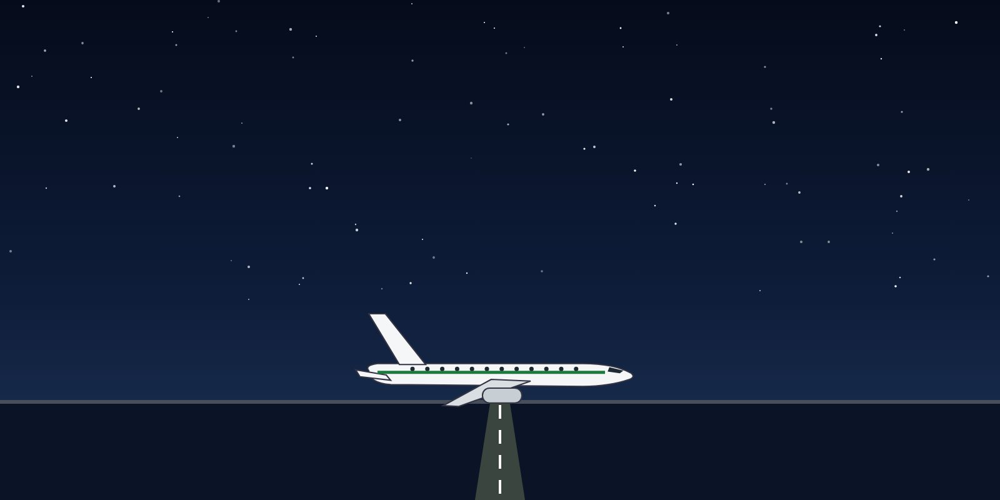

Module 2 · Duty Time and Rest
Lesson 06: Rest Periods and Worked Examples
Lesson narration
Checking for narration…
Learning objectives
- Calculate the minimum rest at home base and away from base.
- Apply the weekly rest rule.
- Work through complete duty and rest examples.

Rest rules
Example 1 — day duty, 4 legs
Two pilots, first take-off 08:15, 4 legs. Maximum DTP: 13 h − 1 h (4 legs) = 12 h. Check-in 07:15 → latest check-out 19:15 → latest last landing 18:45. Rest at base: 12 h → next check-in 07:15.
Example 2 — early start in the WOCL, 4 legs
First take-off 06:30, check-in 05:30 → 30 min in the WOCL × 100 % = −30 min. Maximum DTP: 12 h (4 legs) − 30 min = 11 h 30. Latest check-out 17:00 → latest last landing 16:30. Rest at base 12 h → next check-in 05:00.
Example 3 — night duty ending in the WOCL, 3 legs
VIP flight with 3 legs, landing at 03:30, check-out 04:00 → 2 h in the WOCL × 50 % = −1 h. Maximum DTP: 12 h 30 (3 legs) − 1 h = 11 h 30. Check-in 16:30, take-off 17:30. Rest 12 h → next check-in 16:00.
Key takeaways
- Rest at base ≥ DTP flown, minimum 12 h; away ≥ DTP flown, minimum 10 h.
- Every 7 days: 36 consecutive hours including 2 nights.
- Method: basic limit → legs → WOCL → extension → check-out → rest.
Knowledge check
A crew finishes an 11 h 30 duty away from base. What is the minimum rest?